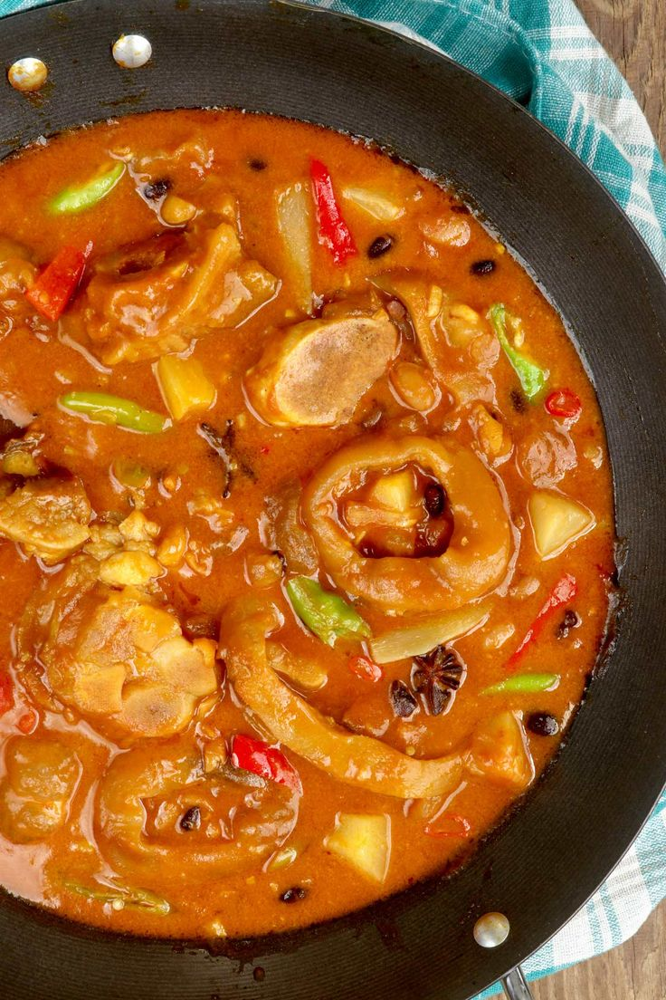

Balbacua Recipe
What is Balbacua?
Balbacua is a delightful Filipino dish that is most popular in those areas of the Philippines. And so if you are not familiar with this, just imagine a warm, truly delicious mix of Pochero and Kare Kare. Our savory Balbacua also has a bit of a milder flavor that is not too salty, but counts on the richness of the tomato sauce to give it depth.
Ingredients
5 lbs. cow trotters
1 Knorr Beef Cube
1 bunch lemongrass
1 bell pepper
3 tablespoons salted black beans
1 bunch green onions
3 Jalapeno pepper
1 teaspoon ground black pepper
8 ounces tomato sauce
10 cups water
2 teaspoons annatto powder
5 cloves garlic
1 piece onion
2 knobs ginger
Fish sauce to taste
3 tablespoons cooking oil
Instructions / How to Cook
1. Heat oil in a pan. Sauté garlic, onion, and ginger until the onion softens. Set aside.
2. Combine trotters, 10 cups water, ground black pepper, and lemongrass in a cooking pot. Let it boil. Adjust the stove to the lowest heat setting and then simmer for 3 hours or until the meat and fibers on the trotters soften.
3. Remove the lemongrass. Add the annatto powder, sauteed aromatics (onion, garlic, and ginger), salted black beans, and Knorr Beef Cube. Continue cooking for 30 minutes.
4. Add jalapeno, bell pepper, and green onions. Cook for 10 minutes.